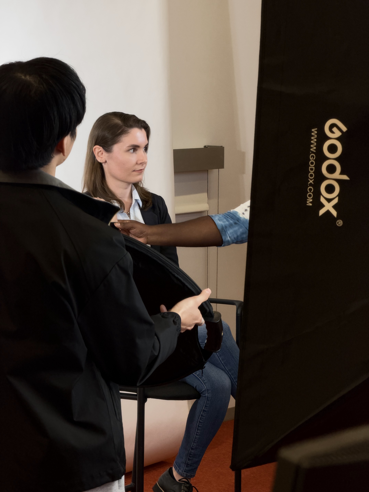

Hello, visitor!
Your personalized greeting will appear here.
Susel Facts.txt
Click the button to discover a fact about me.
Susel Naranjo
The Creative Multiclass
Origin Story
Susel began by learning to see the world through an architectural lens: noticing how spaces work, how people move through them, and how small details can change an experience. That curiosity eventually expanded into digital design, photography, and other creative projects.
Skills and Abilities
- Turning complex ideas into clear visual experiences
- Designing spaces, interfaces, and digital projects
- Communicating in English and Spanish
When not working on a design, Susel may be playing volleyball, exploring a new idea, or starting another creative side quest.

My current favourite painting for Q4 is Salvador Dalí’s The Persistence of Memory .